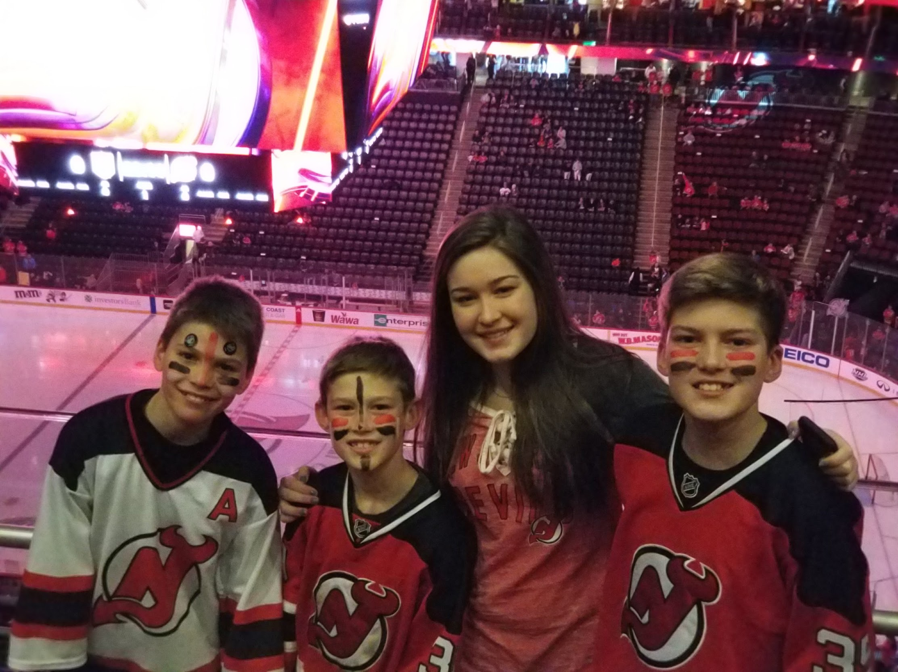
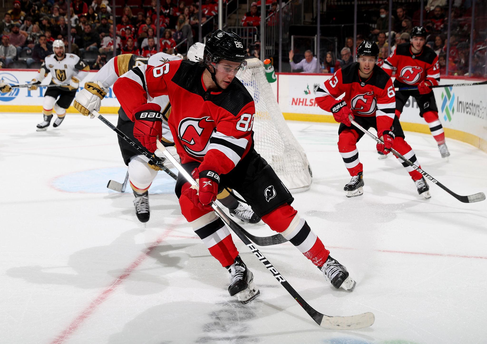

University of Hartford Club Hockey | New Jersey Devils
Hockey is one of my favorite sports. I enjoy both playing hockey and watching professional games. Hockey is a fast-paced and exciting sport that requires teamwork and skill.
I play club hockey at the University of Hartford. Being part of a hockey team gives me the opportunity to compete, improve my skills, and spend time with my teammates.
I enjoy the competition and teamwork involved in hockey.
My favorite NHL team is the New Jersey Devils. The Devils play their home games at the Prudential Center in Newark, New Jersey. I have been going to see them play since I was very little.

The Devils have won three Stanley Cup championships.
| Team | Home City | Stanley Cups |
|---|---|---|
| New Jersey Devils | Newark | 3 |
| New York Rangers | New York | 4 |
| Boston Bruins | Boston | 6 |
Here is a photograph from hockey game I attended.

Visit the official NHL website for more information:
Official NHL WebsiteMy Life in Hockey | CS 110 Exam 1